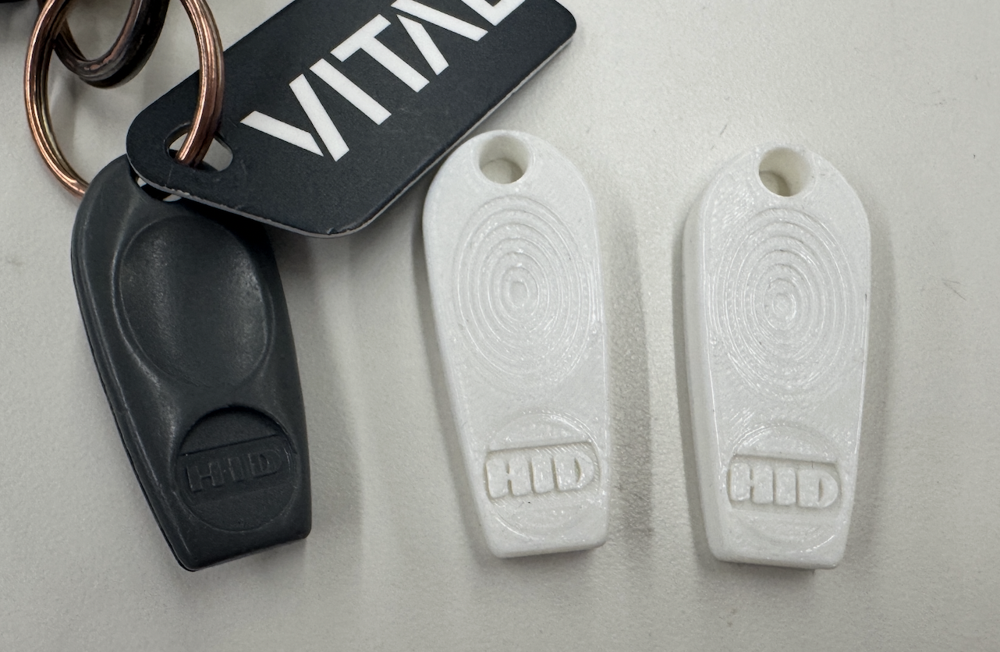
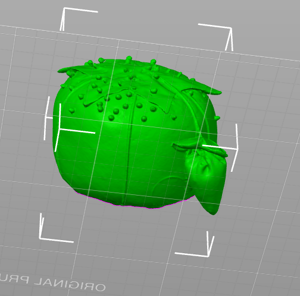
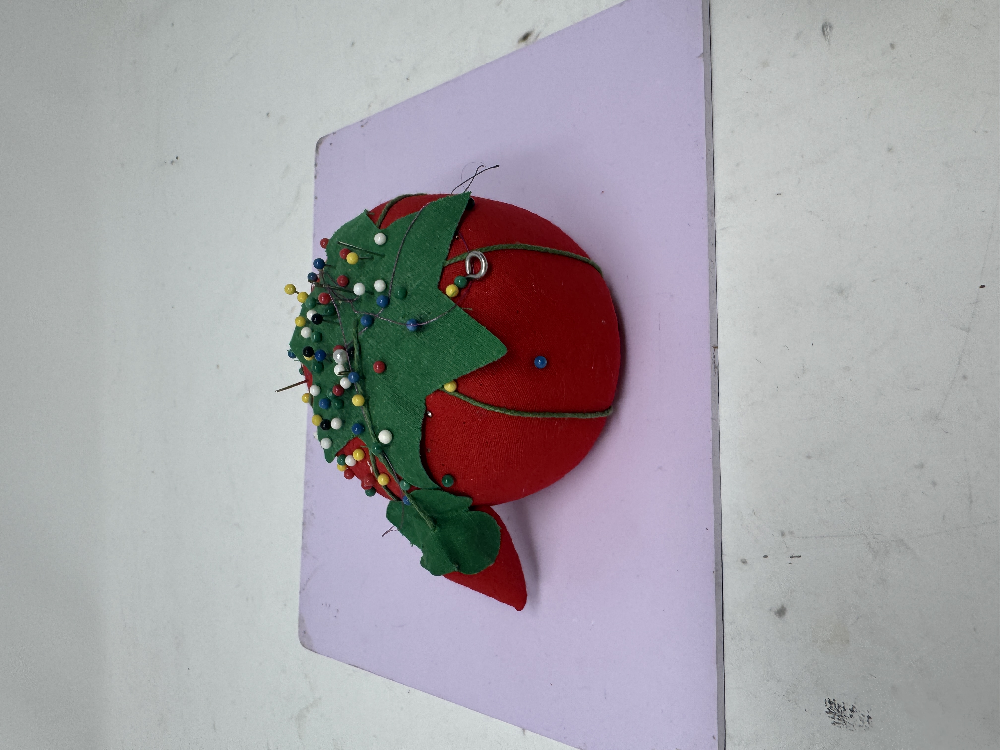

<div class="textcontainer">
<p class="margin"> </p>
<h3>Week 5: 3D Design & Printing</h3>
<h4>Assignment: Model and 3D print something</h4>
<a href='./Key.f3d' download > Download my CAD file </a> <br>
<a href='./Body1.stl' download > Download my STL file </a> <br>
<a href='./eliza.gcode' download > Download my gcode file </a> <br>
For this week's modeling, I decided to CAD my house key. Because it has a fun hole in the top,
I thought it would be fun to make two of them and then have them be earrings. I have yet to
figure out what a good wire to use for that is, but until then, I will just have these two
copies of my key. <br>
<p></p> <br>
Something that was challenging about the cadding was getting the indent shape in the
middle of the key. To do this, I created a little ring on the bottom and lofted the surface
between the ovals. Then, I exported. I didn't need support because I put the key on its
back. It took about 20 minutes to print each copy. I decided to make them white because
it allows you to see the detail of the rings better.
<h4>Assignment: Scan something</h4>
<a href='./eliza_final.stl' download > Download my STL file scan </a> <br>
Scanning was hard! First, it didn't turn on, but that's because the wire we were
using to connect the scanner to the computer for some reason didn't work.
Then! Once we figured that out, it was hard to find a shape large enough with clear
boundaries to scan. It got easier as I practiced with different shapes.
Something else that was hard was figuring out how to trim the shapes most successfully.
I think the solution is just to be patient and outline the shapes carefully even
though it takes a while. Then, I filled the holes, which is a great tool.
Finally, I took two different scans, one of most of the shape and the other of the bottom
that I missed and I tried to merge the images together. However, either it merged
them completely incorrectly (so I fixed manually) or it did it super well but then
wouldn't let me look at the merged file. Another thing I was confused about was why
holes reappeared when I merged shapes. Eventually, I determined that the best approach is
just to be really careful with the points you choose to overlap and then merge in manually.<br>
Here is my scan image and the shape I was scanning.
<p></p> <br>
<p></p> <br>
</div>